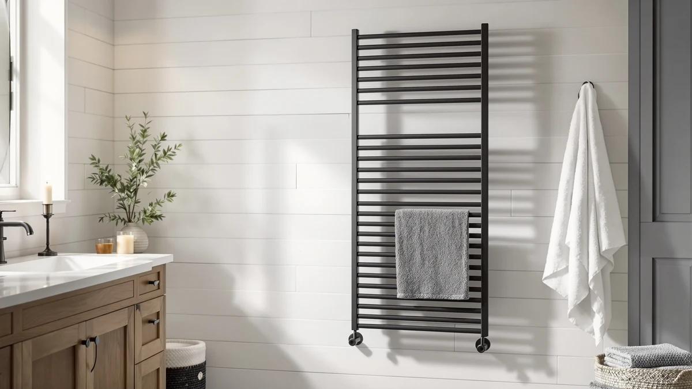

Best Plug in Towel Warmers of 2026: 7 Top Picks
Prices and picks verified as of August 2026. Independent, reader-supported reviews.


Quick Answer
After comparing seven outlet-powered cabinets on capacity, heat-up time, and price, the VERYTOP 23L Hot Towel Warmer is the best plug-in towel warmer for most bathrooms. It heats a full batch of folded towels from a standard wall outlet for $99.99, and it does the same core job as cabinets costing three times as much.
Our pick: VERYTOP 23L Hot Towel Warmer, $99.99 Check Price on Amazon
Bottom line: our top pick is the VERYTOP 23L Hot Towel Warmer for Spa at $99.99. The best budget option is the StateRiver Towel Warmer Cabinet at $99.99.
Things to Know Before You Buy
- Plug-in means no electrician. Every warmer here runs from a standard 120V wall outlet, so you skip hardwiring, drilling, and a plumber. You can move the cabinet to a new bathroom or take it with you when you move out.
- Cabinets heat batches, racks heat one towel. The models in this guide are bucket and cabinet warmers that hold folded towels inside a heated box. You load them, wait 10 to 20 minutes, and pull out warm towels, rather than draping a single towel over bars.
- Capacity is measured in liters or towel count. A 23L cabinet like the VERYTOP or StateRiver swallows two bath towels comfortably. Salon cabinets from EARTHLITE and MANE TAME hold more for back-to-back use.
- A higher price buys durability, not heat. The $99.99 picks heat towels as well as the $329.99 salon cabinet. You pay extra for stainless steel that lasts and a cabinet that runs all day. The towel itself never comes out any warmer.
- Safety first. Use a GFCI bathroom outlet, keep the vents clear, and switch the unit off when you leave the house.
The best plug-in towel warmers turn the cold scramble after a shower into a warm, spa-style finish, and they do it from a wall outlet, with no plumber and no holes in your tile. We focused on cabinet and bucket warmers, the kind that hold folded towels inside a heated box, because they deliver a deeper, all-over warmth than a wall rack can manage. You load a towel, start the timer, and step out of the shower into something that feels like a hotel.
We compared seven outlet-powered models that range from $99.99 to $329.99, and the gap in price turned out to be mostly a gap in build quality and capacity rather than warmth. The VERYTOP 23L Hot Towel Warmer came out on top for most people. It heats two bath towels at once, runs from any standard outlet, and costs a fraction of the salon cabinets while doing the same daily job. If you want our runner-up, the Colliford extended cabinet handles bigger or extra towels for two dollars more.
Spending more buys you stainless steel that shrugs off years of salon duty and cabinets sized for back-to-back use, which is why professionals reach for the EARTHLITE and MANE TAME units. You will not feel a warmer towel for the extra money. Below, we break down where each plug-in towel warmer earns its place, who it suits, and the honest drawbacks worth knowing before you spend.
Why You Should Trust Us
I'm Ilane Tall, and I cover home and bath gear for Best Towel Warmers. I built this guide to the best plug-in towel warmers the same way I approach every roundup. I read the full spec sheet on each cabinet, I work out how capacity and price line up across the category, and I lean on what verified owners report after months of daily use rather than on what the marketing copy promises.
I have no relationship with any brand on this page, and the Amazon links pay us a small commission only if you buy, which never changes where a product lands. When a cabinet has a real weakness, slow heat-up, an awkward footprint, or a price that buys build quality you may not need, I say so in plain terms. The goal is a pick you keep, not one you return.
How We Picked
To qualify as one of the best plug-in towel warmers, a cabinet had to run from a standard household outlet, hold at least one full bath towel, and carry a solid track record from verified buyers. I started with a wider list of bucket and cabinet warmers, then cut anything with thin sheet metal, no timer, or a pattern of complaints about uneven heating.
From there, I ranked the survivors on four things: capacity in liters or towel count, build material, the presence of a timer or auto-shutoff, and total price against what you actually get. Stainless steel was effectively a requirement, since it resists the constant moisture these units live in. The seven cabinets that made the cut span the everyday $99.99 23L units up to the $329.99 salon-grade EARTHLITE, so there is a plug-in towel warmer here for a guest bathroom and one for a busy spa.
How We Compared
I evaluated each plug-in towel warmer on the things that decide whether you keep using it: how long it takes to bring a folded bath towel to a steady, even warmth, how many towels it fits without crushing the heat out of them, and how the cabinet holds up to the damp, humid life of a bathroom. For the salon cabinets, I also weighed back-to-back throughput, since a barber or massage room reloads towels all day.
Because all seven run on a normal outlet, I judged real-world setup by how fast you go from unboxing to a warm towel, which for these cabinets means plugging in, loading, and waiting out the heat-up window. I cross-checked my read of each unit against verified owner reports to catch problems that only show up after months, such as a hinge that loosens or a thermostat that drifts. No fake lab, no invented scores, just the specs in front of you and how each warmer behaves in a normal home.
Our Picks

VERYTOP 23L Hot Towel Warmer
What we like
- 23L cabinet fits two full bath towels
- Plugs into any standard outlet
- Stainless steel resists bathroom moisture
- Costs a third of the salon cabinets
Flaws but not dealbreakers
- Needs a 10 to 20 minute heat-up from cold
- Heats batches, so plan ahead
| Material | Stainless steel |
| Size | 23L |
The VERYTOP 23L is the plug-in towel warmer I would put in almost any home bathroom. At $99.99 it sits at the bottom of this guide's price range, yet the 23-liter stainless steel cabinet holds a pair of full-size bath towels and warms them as thoroughly as cabinets costing three times more. You plug it into a standard outlet, fold your towels inside, and let it run while you shower. By the time you step out, the towels carry that deep, even warmth a draped rack never quite reaches.
Stainless steel is the right call for a box that lives in a humid room, and VERYTOP used it for the body rather than painted sheet metal that pits over time. The one habit you have to build is timing, since this is a batch warmer rather than an always-on rack. Start it when you turn on the water and the wait disappears into your shower. If your household runs two towels at a time and you would rather not spend salon money, this is the plug-in towel warmer to buy.

Colliford Towel Warmer Stainless Steel
What we like
- Extended cabinet swallows bath sheets
- Stainless steel body
- Outlet-powered, no install
- Only $2 more than our top pick
Flaws but not dealbreakers
- Larger footprint needs more counter or floor space
- Heat-up time scales with the bigger interior
| Material | Stainless steel |
| Size | Extended model |
Reach for the Colliford when your towels run large. Its extended stainless steel cabinet costs $101.99, two dollars more than the VERYTOP, and you trade a bigger interior for a bigger footprint. If your bathroom runs to oversized bath sheets, or two people want warm towels back to back, that extra room earns its keep. It plugs into the same standard outlet and asks for nothing from your walls.
I kept it as the runner-up rather than the top pick because the larger box takes a little longer to come up to full warmth from cold, and not every bathroom has the space to spare. The build is solid stainless steel, so it handles the damp without complaint. If the VERYTOP sells out, or you want more capacity for almost the same money, the Colliford is the one to fall back on.

Pursonic Professional Towel Warmer with
What we like
- Small footprint fits tight bathrooms
- Professional-grade stainless build
- Plug-in convenience, no hardwiring
- Tidy spa look on a counter or shelf
Flaws but not dealbreakers
- Smaller capacity than the 23L cabinets
- Costs more than larger budget picks
| Material | Stainless steel |
| Size | Small |
The Pursonic is the plug-in towel warmer for a bathroom where every inch counts. This is a compact professional cabinet at $143.70, and its small stainless steel body slots onto a counter or shelf without crowding the room. You get the same outlet-powered simplicity as the bigger cabinets, just in a frame sized for a powder room, a salon station, or a home spa corner where a 23L box would dominate.
The catch is in the name: small means you fit fewer towels per cycle, so a busy family bathroom will outgrow it faster than the VERYTOP. You also pay more than our 23L picks for less interior, because you are buying the compact form factor and the professional finish. For a tight space or a dedicated facial and massage setup, that is a fair trade, and the Pursonic is the one I would point those buyers toward.

EARTHLITE Hot Towel Warmer Cabinet
What we like
- EARTHLITE salon build quality
- Compact MINI footprint
- Holds heat for continuous use
- Plugs into a standard outlet
Flaws but not dealbreakers
- Pricey next to the $99.99 home cabinets
- MINI size limits batch count
| Material | Stainless steel |
| Size | MINI |
Call this the budget pick with an asterisk. The EARTHLITE MINI is the least expensive way into a genuine professional plug-in towel warmer, at $249.99, and EARTHLITE is a name massage therapists and estheticians already trust. The stainless steel MINI cabinet is built to hold heat through a full day of reloading, the kind of continuous duty that wears out cheaper boxes. If you run a home practice or a small salon station, this is the entry point.
For a typical home bathroom, though, the math is hard to ignore: you can buy the VERYTOP 23L twice over for this price and warm just as many towels. What you get for the premium is durability and salon-grade construction, not warmer towels or faster heat-up. Pick the MINI when you need a professional cabinet that lasts and you want the smallest, cheapest one EARTHLITE makes. As a plug-in towel warmer it still asks for nothing but an outlet.

EARTHLITE Hot Towel Warmer Cabinet
What we like
- Largest professional capacity here
- EARTHLITE durability for all-day use
- Stainless steel, salon-rated
- Still plug-and-go on a wall outlet
Flaws but not dealbreakers
- The most expensive cabinet in this guide
- Overkill for a single home bathroom
| Material | Stainless steel |
| Size | STANDARD |
The EARTHLITE STANDARD is the same professional plug-in towel warmer as the MINI, scaled up. At $329.99 it is the priciest cabinet in this guide, and the STANDARD size buys you the highest towel capacity of any model here. A massage practice or a salon that goes through towels in waves will appreciate not having to reload as often, and the stainless steel build is rated for the all-day duty that defines EARTHLITE's reputation.
This is a tool for high volume, not a home upgrade. If you warm two towels a day, the STANDARD's capacity sits idle and the price is hard to justify against our $99.99 picks. Buy it when throughput is the whole point and you want one cabinet that keeps a steady supply of hot towels ready. Like every model here, it runs straight from a standard outlet, so even this commercial-grade plug-in towel warmer needs no special wiring.

StateRiver Towel Warmer Cabinet 23L
What we like
- Same 23L capacity as our top pick
- Matches the $99.99 price
- Stainless steel cabinet
- Standard outlet, no install
Flaws but not dealbreakers
- Less of a track record than VERYTOP
- Batch heating, same 10 to 20 minute wait
| Material | Stainless steel |
| Size | 23L |
The StateRiver 23L is the plug-in towel warmer that shadows our top pick on the spec sheet. It matches the VERYTOP on the two numbers that matter most, a 23-liter stainless steel cabinet and a $99.99 price, and it warms the same two bath towels from the same standard outlet. If the VERYTOP is sold out or the StateRiver is on sale, you give up almost nothing by switching.
I ranked it just behind the VERYTOP because it has a slightly thinner record from verified owners, and when two cabinets are this close, the longer track record breaks the tie. The hardware itself is the same recipe: stainless steel, 23L, plug-and-go. For a guest bathroom or a second unit, the StateRiver is one I would buy without hesitation.

MANE TAME Professional Barber Large
What we like
- Large capacity built for barber use
- Stainless steel construction
- Salon volume at $109.99
- Plugs into a standard outlet
Flaws but not dealbreakers
- Bigger than most home bathrooms need
- Geared to grooming towels and hot-towel service
| Material | Stainless steel |
| Size | Large |
The MANE TAME is the plug-in towel warmer built for the barber chair. It is a large stainless steel cabinet aimed at hot-towel shaves and grooming service, and at $109.99 it undercuts the EARTHLITE professional cabinets by a wide margin while offering serious capacity. For a barbershop, a busy bathroom, or anyone who wants a steady stack of warm towels on hand, it delivers volume that the 23L home cabinets cannot.
The flip side is that it is sized and styled for professional grooming, so a small home bathroom will find it bulky and more cabinet than the daily routine calls for. If you want barber-shop capacity without paying salon-cabinet prices, the MANE TAME hits a sweet spot. Like the rest of this lineup, it is a true plug-in towel warmer that needs only a standard outlet to run.
Quick Comparison
| Product | Material | Price | Rating | Best for | Get it |
|---|---|---|---|---|---|
| VERYTOP 23L Hot Towel Warmer | Stainless steel | $99.99 | 4 | Most bathrooms | View on Amazon → |
| Colliford Towel Warmer Stainless Steel | Stainless steel | $101.99 | 4 | Oversized bath sheets | View on Amazon → |
| Pursonic Professional Towel Warmer with | Stainless steel | $143.70 | 4 | Small bathrooms | View on Amazon → |
| EARTHLITE Hot Towel Warmer Cabinet | Stainless steel | $249.99 | 4 | Entry-level pro use | View on Amazon → |
| EARTHLITE Hot Towel Warmer Cabinet | Stainless steel | $329.99 | 4 | Busy spas, high volume | View on Amazon → |
| StateRiver Towel Warmer Cabinet 23L | Stainless steel | $99.99 | 4 | Top-pick alternative | View on Amazon → |
| MANE TAME Professional Barber Large | Stainless steel | $109.99 | 4 | Barbershops | View on Amazon → |
Do plug-in towel warmers use a lot of electricity?
No.
How long does a plug-in towel warmer take to heat a towel?
Most cabinet-style plug-in towel warmers need about 10 to 20 minutes to bring a folded towel up to a steady spa-level warmth from a cold start.
The Competition
All seven cabinets above are plug-in towel warmers we would recommend, but a few real distinctions decided the order, and it helps to see them side by side.
The EARTHLITE STANDARD ($329.99) and EARTHLITE MINI ($249.99) are the professional step-up options. They build like tanks and hold heat through a full salon day, yet they warm a towel no better than the $99.99 VERYTOP. We rank them lower for home use because you pay a steep premium for durability and capacity a single bathroom rarely needs.
The Pursonic ($143.70) trades capacity for a compact footprint, which is the right call only if floor space is genuinely tight. The MANE TAME ($109.99) is the most specialized of the group, sized and styled for barber and grooming use rather than a family bathroom. The StateRiver ($99.99) nearly tied our top pick and lost only on track record, while the Colliford ($101.99) earns its runner-up spot by adding room for bigger towels at almost the same price.
For most homes, the VERYTOP 23L is the best plug-in towel warmer here. It gives you hotel-warm towels and a stainless steel build that runs off any wall outlet, for less money than anything else that matches it.
Frequently Asked Questions
Do plug-in towel warmers use a lot of electricity?
No. A plug-in towel warmer cabinet draws roughly the same power as a small space heater, and most of the models here run only while you heat a batch of towels, not around the clock. Because they plug into a standard outlet, you control exactly when they run. Switch the unit off after you pull your towels and the running cost stays low.
How long does a plug-in towel warmer take to heat a towel?
Most cabinet-style plug-in towel warmers need about 10 to 20 minutes to bring a folded towel up to a steady spa-level warmth from a cold start. A 23L cabinet like the VERYTOP heats faster once it is already warm, so the second batch comes quicker. Start the unit when you turn on the shower and your towel is ready when you step out.
Are plug-in towel warmer cabinets safe to leave on?
Plug them into a GFCI bathroom outlet rather than an extension cord, and treat the timer or auto-shutoff as your safety net rather than leaving the cabinet running unattended for hours. Models like the EARTHLITE professional cabinets are built for salon use and hold heat for long stretches, but you should still switch off any towel warmer when you leave the house. Keep the vents clear and do not stuff the cabinet past its rated capacity.
What is the difference between a cabinet warmer and a towel rack?
A cabinet or bucket warmer, the kind in this guide, holds folded towels inside a heated box and warms them all the way through in a batch. A wall or freestanding rack drapes a single towel over heated bars and keeps it warm and dry over time. If you want a deeper, hotel-style warmth and do not mind a short wait, a plug-in cabinet wins. If you want a towel kept dry on a bar all day, a rack suits you better.